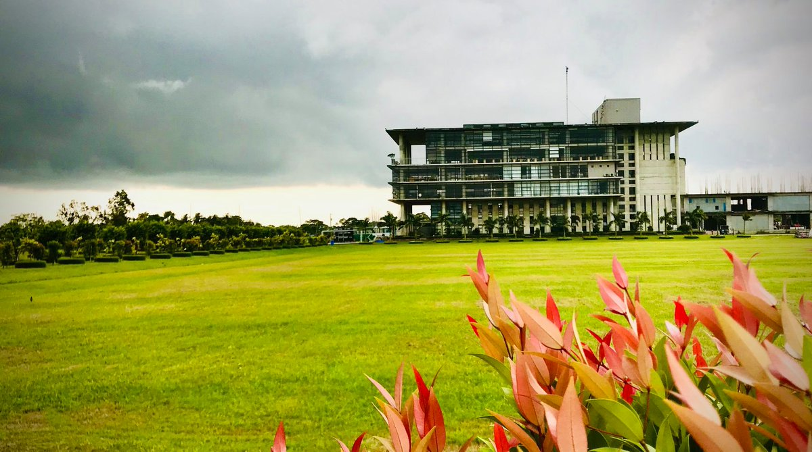

Why Choose CETL Green University?

Green Campus
Our campus is designed with sustainability in mind, featuring renewable energy sources, green buildings, and beautiful green spaces.

Hands-on Learning
We provide hands-on learning experiences, enabling students to apply sustainability concepts in real-world scenarios.

Expert Faculty
Our faculty members are experts in sustainability, bringing a wealth of knowledge and experience to the classroom.